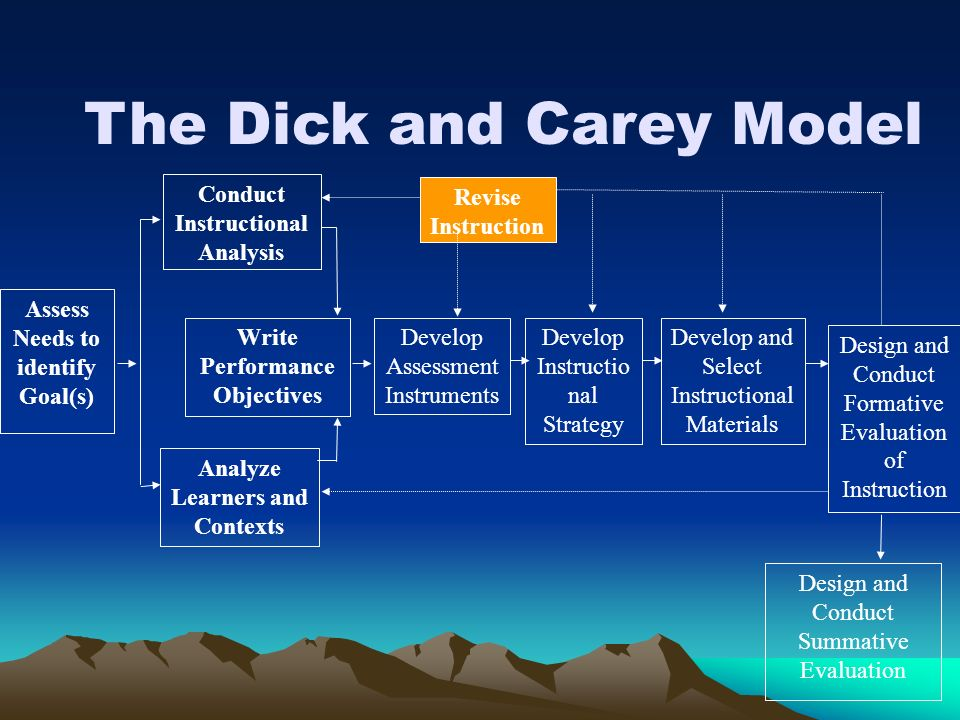
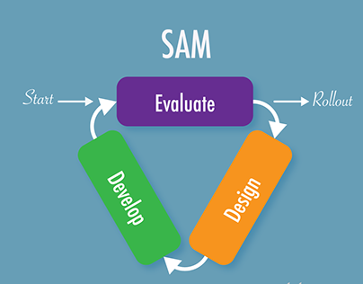
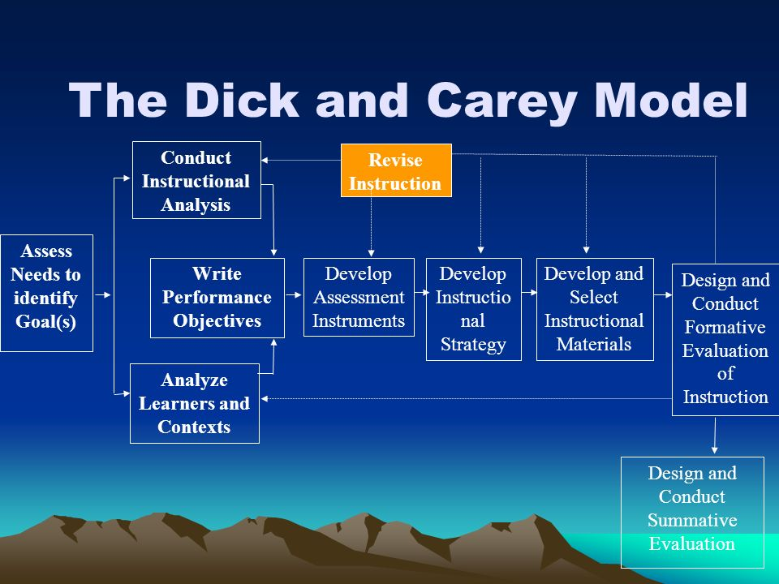
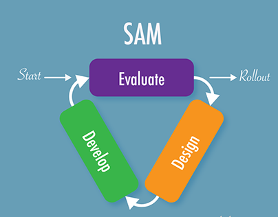

Instructional Design Models
ID Models.
 



Importance.
The best Instructional Design Models and their education importance in designing world!
The ADDIE model is the generic process traditionally used by instructional designers and training developers. The five phases—Analysis, Design, Development, Implementation, and Evaluation—represent a dynamic, flexible guideline for building effective training and performance support tools. Addie model is great for enhancing the designing part in education.
One popular alternative to ADDIE is SAM, which stands for Successive Approximation Model. Created by Allen Interactions, SAM offers an instructional design approach consisting of repeated small steps, or iterations, that are intended to address some of the most common instructional design pain points, like meeting timelines, staying on budget, and collaborating with Subject Matter Experts (SMEs).
The Dick and Carey Model is an instructional systems design (ISD) model taking a systems approach and based on the research of Walter Dick of Florida State University and Lou and James Carey of the University of South Florida. ... Design and conduct a formative assessment to determine how to improve instruction
Significance.
The best three models in the designing world.
The significance and importance of three main instructional design models: Addie, Sam, and Dick & Carey has been given below.
The best three instructioanl design models:
Addie Model
The foundational model of all models
Addie is an acronym for the five stages of a development process: Analysis, Design, Development, Implementation, and Evaluation. The ADDIE model relies on each stage being done in the given order but with a focus on reflection and iteration. The model gives you a streamlined, focused approach that provides feedback for continuous improvement. .
Sam Model
The second important model
Successive Approximation Model (SAM) is an Agile Instructional Systems Design model that has been introduced as an alternative to ADDIE that also emphasizes collaboration, efficiency and repetition..

Dick & Carey Model
A Unique Model
The Dick & Carey model is based on ten componenets. Similar to the Kemp model, the Dick and Carey model focuses on the interrelationship between elements in the design process. For the Dick and Carey model those elements are context, content, learning and instrction. Dick and Carey believe that the instrcutor, learners, materials, instructional activities, delivery system, and learning work together to produce the desired outcomes.
Usage.
Many professional Instructional Designers use the ADDIE model. The ADDIE model is an excellent way to structure your online course. ADDIE is an acronym that stands for Analyze, Design, Develop, Implement, and Evaluate. The best way to learn how to create an online course is by following the ADDIE model.
SAM model requires a close collaboration between all parties, such instructional designer, program manager, facilitators, clients, which ensures the best development of each course and training. If there is anything got alert, instant feedback will trigger the evaluation so that course development can be changed quickly.
The systems approach by Dick and Carey helps instructional designers develop curricula through a series of nine steps which work together toward a defined instructional goal. The Dick and Carey systems approach considers components such as the instructor, learners, materials, instructional activities, delivery system, and the learning and performance environment. Unlike traditional models, the Dick and Carey systems approach is portrayed as a curvilinear flow portrayed with one-way arrows. The curvilinear design portrays an easier way instructional design is practiced and developed